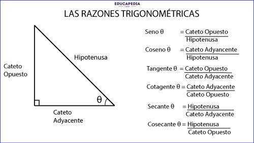

Matemáticas
Teorema De Pitágoras
El teorema de Pitágoras es un principio fundamental en la geometría euclidiana, y establece una relación matemática entre los lados de un triángulo rectángulo. Un triángulo rectángulo es un triángulo que tiene un ángulo recto, es decir, un ángulo de 90 grados.En un triángulo rectángulo, el cuadrado de la longitud de la hipotenusa (el lado opuesto al ángulo recto) es igual a la suma de los cuadrados de las longitudes de los otros dos lados, llamados catetos.

Razones Trigonométricas
Son funciones matemáticas que relacionan los ángulos de un triángulo con las longitudes de sus lados. Estas razones son fundamentales en trigonometría y se utilizan ampliamente en matemáticas, física, ingeniería y otras disciplinas. Las razones trigonométricas básicas están definidas en relación con un triángulo rectángulo.
Seno:El seno de un ángulo en un triángulo rectángulo se define como la razón entre el cateto opuesto y la hipotenusa.
Cos:El coseno de un ángulo en un triángulo rectángulo se define como la razón entre el cateto adyacente y la hipotenusa.
Tangente:La tangente de un ángulo en un triángulo rectángulo se define como la razón entre el cateto opuesto y el cateto adyacente.
